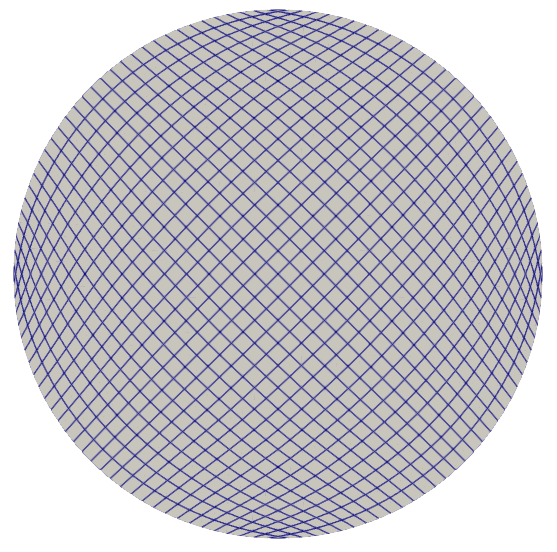

Poisson 2D Example on Circular Domain
This example demonstrates how to solve a Poisson equation in 2D on a circular domain using the fastvpinns package. The Poisson equation is given by
where \(\Omega\) is the circular domain and \(f\) is the source term. The boundary conditions are given by
For this problem, the parameters are
\(f = 4x^2\cos(x^2 + y^2) - 2x\sin(x^2 + y^2) + 4y^2\cos(x^2 + y^2) + 4\sin(x^2 + y^2)\)
\(\epsilon = 1\)
\(\mathbf{b} = [1, 0]\)
\(c = 0\)
The exact solution is given by
Note : The forcing formulation for this problem is obtained by substituting the exact solution into the cd2d equation with given pde parameters.
Computational Domain
The computational domain is a circular domain with radius 1 centered at (0, 0).
## Contents —
[Steps to run the code](#steps-to-run-the-code)
[Example File - cd2d_example.py](#example-file—cd2d_examplepy) - [Defining the boundary conditions](#defining-the-boundary-conditions) - [Defining the source term](#defining-the-source-term) - [Defining the exact solution](#defining-the-exact-solution) - [Defining the bilinear form](#defining-the-bilinear-form)
[Input File](#input-file) - [Experimentation parameters](#experimentation) - [Geometry parameters](#geometry) - [Finite element space parameters](#fe) - [PDE Beta parameters](#pde) - [Model parameters](#model) - [Logging parameters](#logging)
[Main File - main_cd2d.py](#main-file—main_cd2dpy) - [Importing the required libraries](#importing-the-required-libraries) - [imports from fastvpinns](#imports-from-fastvpinns) - [Reading the input file](#reading-the-input-file) - [Reading all input parameters](#reading-all-input-parameters) - [Set up the geometry](#set-up-the-geometry) - [Setup fespace](#setup-fespace) - [setup datahandler](#setup-datahandler) - [setup model](#setup-model) - [pre-train setup](#pre-train-setup) - [Training](#training) - [Post Training](#post-training)
[Save the outputs](#save-the-outputs)
[Solution Plots](#solution-plots)
[References](#references)
## Steps to run the code —
To run the code, execute the following command:
`bash
python3 main_cd2d.py input.yaml
`
## Example File - [cd2d_example.py](cd2d_example.py) —
This file hosts all the details about the bilinear parameters for the PDE, boundary conditions, source term, and the exact solution.
### Defining the boundary conditions
The function circle_boundary returns the boundary value for a given component of the boundary. The function get_boundary_function_dict returns a dictionary of boundary functions. The key of the dictionary is the boundary id and the value is the boundary function. The function get_bound_cond_dict returns a dictionary of boundary conditions. The key of the dictionary is the boundary id and the value is the boundary condition.
Note : As of now, only Dirichlet boundary conditions are supported.
```python def circle_boundary(x, y):
“”” This function will return the boundary value for given component of a boundary “”” return 0.0
- def get_boundary_function_dict():
“”” This function will return a dictionary of boundary functions “”” return {1000: circle_boundary}
- def get_bound_cond_dict():
“”” This function will return a dictionary of boundary conditions “”” return {1000: “dirichlet”}
### Defining the source term
The function rhs returns the value of the source term at a given point.
“”” This function will return the value of the rhs at a given point “”” f_temp = 32 * (x * (1 - x) + y * (1 - y))
return f_temp
``` [Return to top](#contents)
### Defining the exact solution
The function exact_solution returns the value of the exact solution at a given point.
```python def exact_solution(x, y):
“”” This function will return the value of the exact solution at a given point “”” u_temp = 16 * x * (1 - x) * y * (1 - y)
return u_temp
``` [Return to top](#contents)
### Defining the bilinear form
The function get_bilinear_params_dict returns a dictionary of bilinear parameters. The dictionary contains the values of the parameters $epsilon$ (epsilon), $b_x$ (convection in x-direction), $b_y$ (convection in y-direction), and $c$ (reaction term).
Note : If any of the bilinear parameters are not present in the dictionary (for the cd2d model), then the code will throw an error.
```python def get_bilinear_params_dict():
“”” This function will return a dictionary of bilinear parameters “”” eps = 1.0 b_x = 1.0 b_y = 0.0 c = 0.0
return {“eps”: eps, “b_x”: b_x, “b_y”: b_y, “c”: c}
``` [Return to top](#contents)
## Input File —
This is the file that contains all the details about the problem. The input file is in the YAML format. The input file for this example is given below. The contents of the yaml files are as follows
#### Experimentation
Defines the output path where the results will be saved.
output_path: “output/cd2d/1” # Path to the output directory where the results will be saved.
``` [Return to top](#contents)
#### Geometry
It contains the details about the geometry of the domain. The mesh generation method can be either “internal” or “external”. If the mesh generation method is “internal”, then the internal_mesh_params are used to generate the mesh. If the mesh generation method is “external”, then the mesh is read from the file specified in the mesh_file parameter.
In this case, we will use an external mesh. The mesh ../meshes/circle_quad.mesh is generated using the Gmsh software. The mesh needs to have physical elements defined for the boundary. In this case, the physical element is defined as 1000 (which is defined in the circle_boundary function in the cd2d_example.py file).
exact_solution_generation is set to “internal” which means that the exact solution is generated using the exact_solution function in the cd2d_example.py file. For external check the other examples [cd2d_gear](../cd2d_gear/)
mesh_type is set to “quadrilateral” which means that the mesh is a quadrilateral mesh.
Note: As of now, only quadrilateral meshes are supported. - boundary_refinement_level is set to 4 which means that the boundary is refined 4 times. (i.e), when the mesh is read, only the boundary points of an edge in quadrilateral mesh are read. this refinement will refine the boundary points to get more boundary points within the edge. - boundary_sampling_method is set to “uniform” which means that the boundary points are sampled using the “uniform” method. (Use only uniform sampling as of now.) - generate_mesh_plot is set to True which means that the mesh plot is generated and saved in the output directory.
mesh_generation_method: “external” # Method for generating the mesh. Can be “internal” or “external”. generate_mesh_plot: True # Flag indicating whether to generate a plot of the mesh.
# internal mesh generated quadrilateral mesh, depending on the parameters specified below.
- internal_mesh_params: # Parameters for internal mesh generation method.
x_min: 0 # Minimum x-coordinate of the domain. x_max: 1 # Maximum x-coordinate of the domain. y_min: 0 # Minimum y-coordinate of the domain. y_max: 1 # Maximum y-coordinate of the domain. n_cells_x: 4 # Number of cells in the x-direction. n_cells_y: 4 # Number of cells in the y-direction. n_boundary_points: 400 # Number of boundary points. n_test_points_x: 100 # Number of test points in the x-direction. n_test_points_y: 100 # Number of test points in the y-direction.
- exact_solution:
exact_solution_generation: “internal” # whether the exact solution needs to be read from external file. exact_solution_file_name: “” # External solution file name.
mesh_type: “quadrilateral” # Type of mesh. Can be “quadrilateral” or other supported types.
- external_mesh_params: # Parameters for external mesh generation method.
mesh_file_name: “../meshes/circle_quad.mesh” # Path to the external mesh file (should be a .mesh file). boundary_refinement_level: 4 # Level of refinement for the boundary. boundary_sampling_method: “lhs” # Method for sampling the boundary. Can be “uniform” or “lhs”.
``` [Return to top](#contents)
#### Finite Element Space
This section contains the details about the finite element spaces.
fe_order: 6 # Order of the finite element basis functions. fe_type: “legendre” # Type of finite element basis functions. Can be “jacobi” or other supported types. quad_order: 10 # Order of the quadrature rule. quad_type: “gauss-jacobi”
Here the fe_order is set to 6 which means it has 6 basis functions in each direction. The quad_order is set to 10 which means it uses a 10-points in each direction for the quadrature rule. The supported quadrature rules are “gauss-jacobi” and “gauss-legendre”. In this version of code, both “jacobi” and “legendre” refer to the same basis functions (to maintain backward compatibility). The basis functions are special type of Jacobi polynomials defined by $$J_{n} = J_{n-1} - J_{n+1}$$, where $J_{n} is the nth Jacobi polynomial.
[Return to top](#contents)
#### pde
This value provides the beta values for the dirichlet boundary conditions. The beta values the multipliers that are used to multiply the boundary losses. $loss_{total} = loss_ {pde} + beta * loss_{dirichlet} $
beta: 10 # Parameter for the PDE.
``` [Return to top](#contents)
#### model
The model section contains the details about the dense model to be used. The model architecture is given by the model_architecture parameter. The activation function used in the model is given by the activation parameter. The epochs parameter is the number of training epochs. The dtype parameter is the data type used for computations. The learning_rate section contains the parameters for learning rate scheduling. The initial_learning_rate parameter is the initial learning rate. The use_lr_scheduler parameter is a flag indicating whether to use the learning rate scheduler. The decay_steps parameter is the number of steps between each learning rate decay. The decay_rate parameter is the decay rate for the learning rate. The staircase parameter is a flag indicating whether to use the staircase decay.
Any parameter which are not mentioned above are archived parameters, which are not used in the current version of the code. (like use_attention, set_memory_growth)
model_architecture: [2, 50,50,50,50, 1] # Architecture of the neural network model. activation: “tanh” # Activation function used in the neural network. use_attention: False # Flag indicating whether to use attention mechanism in the model. epochs: 50000 # Number of training epochs. dtype: “float32” # Data type used for computations. set_memory_growth: False # Flag indicating whether to set memory growth for GPU.
- learning_rate: # Parameters for learning rate scheduling.
initial_learning_rate: 0.001 # Initial learning rate. use_lr_scheduler: False # Flag indicating whether to use learning rate scheduler. decay_steps: 1000 # Number of steps between each learning rate decay. decay_rate: 0.99 # Decay rate for the learning rate. staircase: False
``` [Return to top](#contents)
#### logging
update_console_output defines the epochs at which you need to log parameters like loss, time taken, etc.
update_console_output: 100 # Number of epochs after which to update the console output.
The other parameters such as update_progress_bar, update_solution_images are archived parameters which are not used in the current version of the code.
[Return to top](#contents)
## Main File - [main_cd2d.py](main_cd2d.py) —
This file contains the main code to solve the Poisson equation in 2D on a circular domain. The code reads the input file, sets up the problem, and solves the Poisson equation using the fastvpinns package.
#### Importing the required libraries
The following libraries are imported in the main file.
`python
import numpy as np
import pandas as pd
import pytest
import tensorflow as tf
from pathlib import Path
from tqdm import tqdm
import yaml
import sys
import copy
from tensorflow.keras import layers
from tensorflow.keras import initializers
from rich.console import Console
import copy
import time
`
[Return to top](#contents)
#### imports from fastvpinns
The following imports are used from the fastvpinns package.
Imports the geometry module from the fastvpinns package, which contains the Geometry_2D class responsible for setting up the geometry of the domain.
`python
from fastvpinns.Geometry.geometry_2d import Geometry_2D
`
- Imports the fespace module from the fastvpinns package, which contains the FE_2D class responsible for setting up the finite element spaces.
`python
from fastvpinns.FE_2D.fespace2d import Fespace2D
`
- Imports the datahandler module from the fastvpinns package, which contains the DataHandler class responsible for handling and converting the data to necessary shape for training purposes
`python
from fastvpinns.DataHandler.datahandler import DataHandler
`
Imports the model module from the fastvpinns package, which contains the Model class responsible for training the neural network model.
`python
from fastvpinns.Model.model import DenseModel
`
Import the Loss module from the fastvpinns package, which contains the loss function of the PDE to be solved in tensor form.
`python
from fastvpinns.physics.cd2d import pde_loss_cd2d
`
Import additional functionalities from the fastvpinns package.
`python
from fastvpinns.utils.plot_utils import plot_contour, plot_loss_function, plot_test_loss_function
from fastvpinns.utils.compute_utils import compute_errors_combined
from fastvpinns.utils.print_utils import print_table
`
[Return to top](#contents)
#### Reading the input file
The input file is read using the yaml library.
```python if len(sys.argv) != 2:
print(“Usage: python main.py <input file>”) sys.exit(1)
# Read the YAML file with open(sys.argv[1], ‘r’) as f:
config = yaml.safe_load(f)
#### Reading all input parameters ```python # Extract the values from the YAML file
i_output_path = config[‘experimentation’][‘output_path’]
i_mesh_generation_method = config[‘geometry’][‘mesh_generation_method’] i_generate_mesh_plot = config[‘geometry’][‘generate_mesh_plot’] i_mesh_type = config[‘geometry’][‘mesh_type’] i_x_min = config[‘geometry’][‘internal_mesh_params’][‘x_min’] i_x_max = config[‘geometry’][‘internal_mesh_params’][‘x_max’] i_y_min = config[‘geometry’][‘internal_mesh_params’][‘y_min’] i_y_max = config[‘geometry’][‘internal_mesh_params’][‘y_max’] i_n_cells_x = config[‘geometry’][‘internal_mesh_params’][‘n_cells_x’] i_n_cells_y = config[‘geometry’][‘internal_mesh_params’][‘n_cells_y’] i_n_boundary_points = config[‘geometry’][‘internal_mesh_params’][‘n_boundary_points’] i_n_test_points_x = config[‘geometry’][‘internal_mesh_params’][‘n_test_points_x’] i_n_test_points_y = config[‘geometry’][‘internal_mesh_params’][‘n_test_points_y’] i_exact_solution_generation = config[‘geometry’][‘exact_solution’][‘exact_solution_generation’] i_exact_solution_file_name = config[‘geometry’][‘exact_solution’][‘exact_solution_file_name’]
i_mesh_file_name = config[‘geometry’][‘external_mesh_params’][‘mesh_file_name’] i_boundary_refinement_level = config[‘geometry’][‘external_mesh_params’][
‘boundary_refinement_level’
] i_boundary_sampling_method = config[‘geometry’][‘external_mesh_params’][
‘boundary_sampling_method’
]
i_fe_order = config[‘fe’][‘fe_order’] i_fe_type = config[‘fe’][‘fe_type’] i_quad_order = config[‘fe’][‘quad_order’] i_quad_type = config[‘fe’][‘quad_type’]
i_model_architecture = config[‘model’][‘model_architecture’] i_activation = config[‘model’][‘activation’] i_use_attention = config[‘model’][‘use_attention’] i_epochs = config[‘model’][‘epochs’] i_dtype = config[‘model’][‘dtype’] if i_dtype == “float64”:
i_dtype = tf.float64
- elif i_dtype == “float32”:
i_dtype = tf.float32
- else:
print(“[ERROR] The given dtype is not a valid tensorflow dtype”) raise ValueError(“The given dtype is not a valid tensorflow dtype”)
i_set_memory_growth = config[‘model’][‘set_memory_growth’] i_learning_rate_dict = config[‘model’][‘learning_rate’]
i_beta = config[‘pde’][‘beta’]
i_update_console_output = config[‘logging’][‘update_console_output’]
all the variables which are named with the prefix i_ are input parameters which are read from the input file. [Return to top](#contents)
#### Set up the geometry
Obtain the bounndary condition and boundary values from the cd2d_example.py file and initialise the Geometry_2D class. After that use the domain.read_mesh functionality to read the external mesh file.
```python cells, boundary_points = domain.read_mesh(
i_mesh_file_name, i_boundary_refinement_level, i_boundary_sampling_method, refinement_level=1,
)
``` [Return to top](#contents)
#### Setup fespace
Initialise the Fespace2D class with the required parameters.
```python fespace = Fespace2D(
mesh=domain.mesh, cells=cells, boundary_points=boundary_points, cell_type=domain.mesh_type, fe_order=i_fe_order, fe_type=i_fe_type, quad_order=i_quad_order, quad_type=i_quad_type, fe_transformation_type=”bilinear”, bound_function_dict=bound_function_dict, bound_condition_dict=bound_condition_dict, forcing_function=rhs, output_path=i_output_path, generate_mesh_plot=i_generate_mesh_plot,
)
``` [Return to top](#contents)
#### Setup datahandler
Initialise the DataHandler class with the required parameters.
``` [Return to top](#contents)
#### Setup model
Setup the necesary parameters for the model and initialise the Model class. Before that fill the params dictionary with the required parameters.
layer_dims=[2, 30, 30, 30, 1], learning_rate_dict=i_learning_rate_dict, params_dict=params_dict, loss_function=pde_loss_cd2d, input_tensors_list=[datahandler.x_pde_list, train_dirichlet_input, train_dirichlet_output], orig_factor_matrices=[
datahandler.shape_val_mat_list, datahandler.grad_x_mat_list, datahandler.grad_y_mat_list,
], force_function_list=datahandler.forcing_function_list, tensor_dtype=i_dtype, use_attention=i_use_attention, activation=i_activation, hessian=False,
)
``` [Return to top](#contents)
#### Pre-train setup
```python test_points = domain.get_test_points()
print(f”[bold]Number of Test Points = [/bold] {test_points.shape[0]}”) y_exact = exact_solution(test_points[:, 0], test_points[:, 1])
# plot the exact solution num_epochs = i_epochs # num_epochs progress_bar = tqdm(
total=num_epochs, desc=’Training’, unit=’epoch’, bar_format=”{l_bar}{bar:40}{r_bar}{bar:-10b}”, colour=”green”, ncols=100,
) loss_array = [] # total loss test_loss_array = [] # test loss time_array = [] # time per epoc # beta - boundary loss parameters beta = tf.constant(i_beta, dtype=i_dtype)
``` This sets up the test points and the exact solution. The progress bar is initialised and the loss arrays are set up. The beta value is set up as a constant tensor. [Return to top](#contents)
#### Training
```python for epoch in range(num_epochs):
# Train the model batch_start_time = time.time() loss = model.train_step(beta=beta, bilinear_params_dict=bilinear_params_dict) elapsed = time.time() - batch_start_time
# print(elapsed) time_array.append(elapsed)
loss_array.append(loss[‘loss’])
``` This train_step function trains the model for one epoch and returns the loss. The loss is appended to the loss array. Then for every epoch where (epoch + 1) % i_update_console_output == 0 or epoch == num_epochs - 1:
- ```python
y_pred = model(test_points).numpy() y_pred = y_pred.reshape(-1)
error = np.abs(y_exact - y_pred)
# get errors (
l2_error, linf_error, l2_error_relative, linf_error_relative, l1_error, l1_error_relative,
) = compute_errors_combined(y_exact, y_pred)
loss_pde = float(loss[‘loss_pde’].numpy()) loss_dirichlet = float(loss[‘loss_dirichlet’].numpy()) total_loss = float(loss[‘loss’].numpy())
# Append test loss test_loss_array.append(l1_error)
solution_array = np.c_[y_pred, y_exact, np.abs(y_exact - y_pred)] domain.write_vtk(
solution_array, output_path=i_output_path, filename=f”prediction_{epoch+1}.vtk”, data_names=[“Sol”, “Exact”, “Error”],
)
console.print(f”nEpoch [bold]{epoch+1}/{num_epochs}[/bold]”) console.print(“[bold]——————–[/bold]”) console.print(“[bold]Beta : [/bold]”, beta.numpy(), end=” “) console.print(
f”Variational Losses || Pde Loss : [red]{loss_pde:.3e}[/red] Dirichlet Loss : [red]{loss_dirichlet:.3e}[/red] Total Loss : [red]{total_loss:.3e}[/red]”
) console.print(
f”Test Losses || L1 Error : {l1_error:.3e} L2 Error : {l2_error:.3e} Linf Error : {linf_error:.3e}”
)
We will compute all the test errors and write the solution to a vtk file for a complex mesh. Further, the console output will be printed with the loss values and the test errors. [Return to top](#contents)
#### Post Training
model.save_weights(str(Path(i_output_path) / “model_weights”))
solution_array = np.c_[y_pred, y_exact, np.abs(y_exact - y_pred)] domain.write_vtk(
solution_array, output_path=i_output_path, filename=f”prediction_{epoch+1}.vtk”, data_names=[“Sol”, “Exact”, “Error”],
) # print the Error values in table print_table(
“Error Values”, [“Error Type”, “Value”], [
“L2 Error”, “Linf Error”, “Relative L2 Error”, “Relative Linf Error”, “L1 Error”, “Relative L1 Error”,
], [l2_error, linf_error, l2_error_relative, linf_error_relative, l1_error, l1_error_relative],
)
# print the time values in table print_table(
“Time Values”, [“Time Type”, “Value”], [
“Time per Epoch(s) - Median”, “Time per Epoch(s) IQR-25% “, “Time per Epoch(s) IQR-75% “, “Mean (s)”, “Epochs per second”, “Total Train Time”,
], [
np.median(time_array), np.percentile(time_array, 25), np.percentile(time_array, 75), np.mean(time_array), int(i_epochs / np.sum(time_array)), np.sum(time_array),
],
)
# save all the arrays as numpy arrays np.savetxt(str(Path(i_output_path) / “loss_function.txt”), np.array(loss_array)) np.savetxt(str(Path(i_output_path) / “prediction.txt”), y_pred) np.savetxt(str(Path(i_output_path) / “exact.txt”), y_exact) np.savetxt(str(Path(i_output_path) / “error.txt”), error) np.savetxt(str(Path(i_output_path) / “time_per_epoch.txt”), np.array(time_array))
``` [Return to top](#contents)
This part of the code saves the model weights, writes the solution to a vtk file, prints the error values in a table, prints the time values in a table, and saves all the arrays as numpy arrays.
## save the outputs All the outputs will be saved in the output directory specified in the input file. The output directory will contain the following files: - prediction_{epoch}.vtk : The solution file for each epoch. - loss_function.txt : The loss function values for each epoch. - prediction.txt : The predicted values at last epoch at the test points. - exact.txt : The exact values at last epoch at the test points. - error.txt : The error values at last epoch at the test points. - time_per_epoch.txt : The time taken for each epoch. [Return to top](#contents)
## Solution Plots —
- <div style=”display: flex; justify-content: space-around;”>
- <figure>
<img src=”exact_solution.png” alt=”Exact Solution”> <figcaption style=”text-align: center;”>Exact Solution</figcaption>
</figure> <figure>
<img src=”predicted_solution.png” alt=”Predicted Solution”> <figcaption style=”text-align: center;”>Predicted Solution</figcaption>
</figure> <figure>
<img src=”error.png” alt=”Error”> <figcaption style=”text-align: center;”>Error</figcaption>
</figure>
</div>
## References —
[FastVPINNs: Tensor-Driven Acceleration of VPINNs for Complex Geometries.](https://arxiv.org/abs/2404.12063)
[Return to top](#contents)